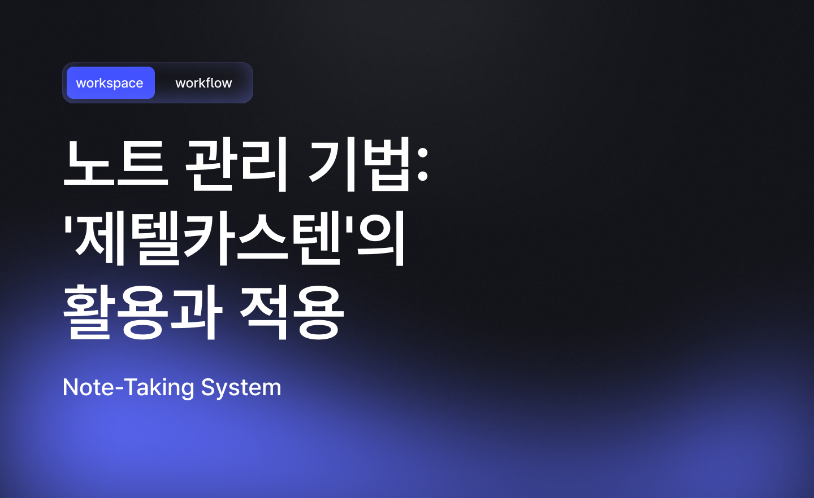

<!DOCTYPE html>
<html lang="ko">

<head>
<meta name="viewport" content="width=device-width, initial-scale=1.0">
<link rel="stylesheet" href="/assets/css/style.css">
<link rel="icon" href="/assets/images/favicon.png" type="image/png">
<link rel="apple-touch-icon" href="/assets/images/apple-touch-icon.png">
<script src="/assets/js/lib/highlight.min.js"></script>
<link rel="stylesheet" href="/assets/css/lib/highlight.min.css">
<script src="/assets/js/lib/lenis.min.js"></script>

    <title>노트 관리 기법: '제텔카스텐'의 활용과 적용</title>
    <meta property="og:type" content="article">
    <meta property="og:title" content="노트 관리 기법: '제텔카스텐'의 활용과 적용">
    <meta property="og:description" content="제텔카스텐 기법의 기본 개념과 활용 방법에 대해 알아봅니다.">
    <meta property="og:image" content="https://sori.studio/category/workspace/system/2025/images/note-management-technique-zettelkasten_01.png">
    <meta property="og:url" content="https://sori.studio/category/workspace/system/2025/note-management-technique-zettelkasten.html">
    
    <meta name="twitter:card" content="summary_large_image">
    <meta name="twitter:title" content="노트 관리 기법: '제텔카스텐'의 활용과 적용">
    <meta name="twitter:description" content="제텔카스텐 기법의 기본 개념과 활용 방법에 대해 알아봅니다.">
    <meta name="twitter:image" content="https://sori.studio/category/workspace/system/2025/images/note-management-technique-zettelkasten_01.png">
  
</head>

<body id="tt-body-index">
    <div id="z-body">
        <div id="z-header"></div>

        <div id="z-layout">
            <main class="z-main">
                <div class="z-main__area">

                    <div class="z-article__section">

                        <div class="z-article">
                            <!--  -->
                            <h1 class="z-article__title">노트 관리 기법: '제텔카스텐'의 활용과 적용</h1>
                            <div class="z-article__meta">
                                <a href="/category/workspace/system" class="z-article__category">
                                    <div class="z-article__category-text">workspace/system</div>
                                </a>
                                <div class="z-article__meta-divider"></div>
                                <div class="z-article__date">2025. 6. 3.</div>
                            </div>

                            <!-- article-content -->
                            <div class="z-article__body" id="z-article__body">
                                
                                <!-- contents start -->
<p data-ke-size="size16">&nbsp;</p>
<h3 data-ke-size="size23"><span style="color: #000000; text-align: start;">제텔카스텐(Zettelkasten) 방식: 지식의 연결과 확장</span></h3>
<p data-ke-size="size16"><span style="color: #000000; text-align: start;"><span style="color: #000000; text-align: start;">제텔카스텐(Zettelkasten)은 독일 사회학자 니클라스 루만(Niklas Luhmann)이 고안한 지식 관리 방법론으로 독일어로 '노트 상자'라는 뜻입니다.<span>&nbsp;</span></span><br /><span style="color: #000000; text-align: start;">이 시스템은 메모를 간결하게 기록하고, 메모끼리 연결해 하나의 지식 네트워크를 만들어 나가는 것이 핵심입니다.<span>&nbsp;</span></span><br /><span style="color: #000000; text-align: start;">루만은 이 방법을 통해 방대한 아이디어와 학문적 성과를 축적할 수 있었으며, 이를 통해 제텔카스텐은 연구자와 작가들 사이에서 창의적 사고와 지식 관리의 효과적인 도구로 알려지게 되었습니다.</span></span></p>
<p data-ke-size="size16">&nbsp;</p>
<h3 data-ke-size="size23"><span style="color: #000000; text-align: start;">1.<span>&nbsp;</span></span><b>제텔카스텐의 기본 개념</b></h3>
<p data-ke-size="size16"><span style="color: #000000; text-align: start;">제텔카스텐은 개별 메모(노트)를 작성하여 각 메모를 연결하고, 상호참조하는 방식으로 지식을 구조화합니다.<span>&nbsp;</span></span><br /><span style="color: #000000; text-align: start;">핵심은 개별 메모가 다른 메모와 연결되며, 이 연결이 일종의 지식 네트워크를 형성해 새로운 아이디어와 통찰을 이끌어내는 것입니다.</span></p>
<ul style="list-style-type: disc; color: #000000; text-align: start;" data-ke-list-type="disc">
<li><b>Atomic Notes</b>: 제텔카스텐의 메모는 하나의 아이디어, 개념, 또는 생각만을 담아야 합니다. 즉, 메모는 '원자적'이어야 하며, 간결하고 핵심적인 내용을 담습니다.</li>
<li><b>Linking</b>: 각 메모는 관련된 다른 메모와 링크를 통해 연결됩니다. 이를 통해 메모가 독립적이지만 동시에 유기적으로 연결된 네트워크가 형성됩니다.</li>
<li><b>Unique ID</b>: 각 메모는 고유한 식별번호(ID)를 가지며, 이 ID를 통해 메모 간의 연결이 이루어집니다.</li>
</ul>
<p data-ke-size="size16">&nbsp;</p>
<h3 data-ke-size="size23"><span style="color: #000000; text-align: start;">2.<span>&nbsp;</span></span><b>제텔카스텐 메모의 종류</b></h3>
<p data-ke-size="size16"><span style="color: #000000; text-align: start;">제텔카스텐에서는 보통 다음과 같은 세 가지 유형의 메모를 사용합니다.</span></p>
<ul style="list-style-type: disc; color: #000000; text-align: start;" data-ke-list-type="disc">
<li><b>임시 메모(Fleeting Notes)</b>: 짧은 생각, 즉흥적인 아이디어, 흥미로운 인사이트 등을 기록하는 임시 메모입니다. 별도의 형식이 필요하지 않으며, 일단 떠오르는 생각을 빠르게 기록하는 용도로 사용합니다.</li>
<li><b>문헌 메모 (Literature Notes)</b>: 읽은 책, 논문, 또는 기타 자료에서 나온 정보와 생각을 기록하는 메모입니다. 핵심 아이디어나 인상 깊은 내용은 직접 인용하기도 하며, 개인적인 해석이나 의견을 함께 기록할 수 있습니다.</li>
<li><b>영구 메모 (Permanent Notes)</b>: 제텔카스텐의 핵심입니다. 위의 메모들 중에서 가치 있는 아이디어나 통찰을 기반으로 새로운 노트를 작성합니다. 하나의 아이디어만 포함해야 하며, 간결하고 독립적인 형태를 유지해야 합니다.</li>
</ul>
<p data-ke-size="size16">&nbsp;</p>
<h3 data-ke-size="size23"><span style="color: #000000; text-align: start;">3.<span>&nbsp;</span></span><b>제텔카스텐 메모 작성 방법</b></h3>
<p data-ke-size="size16"><span style="color: #000000; text-align: start;">제텔카스텐에서는 다음과 같은 양식을 사용하여 메모를 작성하는 것이 효과적입니다.</span></p>
<ul style="list-style-type: disc; color: #000000; text-align: start;" data-ke-list-type="disc">
<li><b>고유 ID 부여</b>: 메모마다 고유한 ID를 붙입니다. 루만은 일종의 체계적인 번호 체계를 사용했는데, 예를 들어<span>&nbsp;</span>1a2와 같은 형태로 메모 간의 계층 구조를 표시했습니다. 현대 디지털 도구에서는 일반적으로 날짜 및 인덱스 기반의 고유 ID가 사용됩니다 (예:<span>&nbsp;</span>20241104-01).</li>
<li><b>주제 및 간결한 설명</b>: 메모의 제목은 해당 메모의 핵심 내용을 설명하는 간결한 문구로 작성합니다. 예를 들어 "제텔카스텐을 활용한 지식 관리의 장점"과 같은 방식으로 작성할 수 있습니다.</li>
<li><b>아이디어 요약</b>: 메모의 본문에는 해당 메모의 주요 아이디어나 개념을 요약합니다. 자신의 언어로 정리한 문장이어야 하며 길지 않고, 간결해야 합니다. 하나의 메모는 하나의 아이디어에만 집중합니다.</li>
<li><b>출처 및 참고자료 기록</b>: 문헌에서 가져온 메모라면 해당 출처나 참고 자료를 명확히 기재합니다. 출처를 함께 기록하면 나중에 확인하고 보충하기가 용이합니다.</li>
<li><b>관련 메모 링크</b>: 메모의 하단에는 관련된 메모의 ID를 링크로 연결합니다. 이 링크를 통해 해당 아이디어와 연관된 다른 아이디어로 자연스럽게 확장해 나갈 수 있습니다.</li>
</ul>
<p data-ke-size="size16"><span style="color: #000000; text-align: start;">아래는 예시를 통해 각각의 노트 작성법을 설명하겠습니다.</span></p>
<p data-ke-size="size16">&nbsp;</p>
<p data-ke-size="size16">&nbsp;</p>
<h4 data-ke-size="size20"><span style="color: #000000; text-align: start;">3-1. 임시 노트 (Fleeting Notes)</span></h4>
<p data-ke-size="size16"><span style="color: #000000; text-align: start;">순간적인 생각이나 아이디어를 빠르게 기록하여 나중에 참고할 수 있도록 합니다.</span></p>
<p data-ke-size="size16">&nbsp;</p>
<p data-ke-size="size16"><b>예시</b><span style="color: #000000; text-align: start;">:</span></p>
<pre id="code_1750864056451" class="bash" data-ke-language="bash" data-ke-type="codeblock"><code>날짜: 2024-11-04
노트 내용: 
- 제텔카스텐 방식으로 지식을 기록하면 단순한 기록을 넘어서 지식 간의 관계를 만들 수 있다. 
관련 노트들을 연결해 주면 새로운 통찰을 얻을 수 있을 것 같다.</code></pre>
<p data-ke-size="size16">&nbsp;</p>
<h4 data-ke-size="size20"><span style="color: #000000; text-align: start;">3-2. 문헌 노트 (Literature Notes)</span></h4>
<p data-ke-size="size16"><span style="color: #000000; text-align: start;">문헌 노트는 책, 논문, 강의 등에서 얻은 주요 내용을 정리한 노트입니다. 이 과정은 정보를 내재화하고 이해를 돕는 데 큰 역할을 합니다.</span></p>
<p data-ke-size="size16">&nbsp;</p>
<p data-ke-size="size16"><b>예시:</b></p>
<pre id="code_1750864117873" class="bash" data-ke-language="bash" data-ke-type="codeblock"><code>날짜: 2024-11-04
출처: "How to Take Smart Notes" by S&ouml;nke Ahrens
내용 요약:
- 제텔카스텐은 연결 중심의 지식 관리 시스템이다.
- 정보는 개별 노트로 저장되며, 관련성이 있는 노트들 간의 링크를 통해 지식이 확장된다.
- 자신만의 언어로 재해석하여 노트를 작성하는 것이 중요하다.</code></pre>
<p data-ke-size="size16">&nbsp;</p>
<h4 data-ke-size="size20"><span style="color: #000000; text-align: start;">3-3. 영구 노트 (Permanent Notes)</span></h4>
<p data-ke-size="size16"><span style="color: #000000; text-align: start;">영구 노트는 임시 노트와 문헌 노트를 바탕으로 개인의 통찰과 지식을 체계적으로 정리한 노트입니다. 이 노트는 다른 노트와 연결되어 지식 네트워크의 일부가 됩니다.</span></p>
<p data-ke-size="size16">&nbsp;</p>
<p data-ke-size="size16"><b>예시:</b></p>
<pre id="code_1750864149948" class="bash" data-ke-language="bash" data-ke-type="codeblock"><code>노트 ID: PN20241104-01
제목: 제텔카스텐을 활용한 지식 관리의 장점
내용:
- 제텔카스텐은 지식을 작은 단위로 나누어 저장하고, 노트 간의 연결을 통해 새로운 통찰을 얻을 수 있게 한다.
- 예를 들어, 특정 아이디어와 관련된 노트를 다른 노트들과 연결함으로써 관련성 있는 아이디어를 종합적으로 이해할 수 있다.
- 이 방식은 단순한 정보 저장을 넘어 창의적 사고와 문제 해결에 큰 도움이 된다.

관련 노트:
- PN20241104-02 (제텔카스텐의 기본 원리)
- PN20241103-01 (지식 네트워크 구축 방법)</code></pre>
<p data-ke-size="size16">&nbsp;</p>
<p data-ke-size="size16"><span style="color: #000000; text-align: start;">이와 같은 제텔카스텐 방식으로 노트를 작성하면, 시간이 지남에 따라 개인만의 지식 네트워크가 확장되며 유용한 아이디어를 발견하고 이해하는 데 큰 도움이 됩니다.<span>&nbsp;</span></span><br /><span style="color: #000000; text-align: start;">또한, 다양한 주제에 대해 생각을 정리하고 연결성을 높이는 것이 제텔카스텐의 핵심입니다.</span></p>
<p data-ke-size="size16">&nbsp;</p>
<p data-ke-size="size16">&nbsp;</p>
<h3 data-ke-size="size23"><span style="color: #000000; text-align: start;">4. 제텔카스텐의 디지털 도구 활용: (추천) 옵시디언</span></h3>
<p data-ke-size="size16"><span style="color: #000000; text-align: start;">디지털 제텔카스텐 시스템을 위해 노션(Notion), 옵시디언(Obsidian) 같은 도구들이 많이 사용됩니다.<span>&nbsp;</span></span><br /><span style="color: #000000; text-align: start;">디지털 도구는 검색, 백링크, 태그 기능을 통해 다음과 같이 메모의 연결과 관리가 더욱 용이해집니다.</span></p>
<ol style="list-style-type: decimal; color: #000000; text-align: start;" data-ke-list-type="decimal">
<li><b>ID 체계가 필요 없음</b><br />옵시디언에서는 모든 메모가 태그와 링크를 통해 서로 연결됩니다. 이로 인해 복잡한 ID 체계를 구축할 필요 없이, 사용자는 원하는 정보를 쉽게 검색하고 정리할 수 있습니다. 메모를 작성할 때마다 관련된 태그를 추가하고, 서로 연결할 문서에 대한 링크를 설정함으로써 효율적인 정보 관리가 가능해집니다.</li>
<li><b>임시 노트와 문헌 노트의 통합</b><br />임시 노트와 문헌 노트는 모두 메모 단계에서의 일시적인 기록입니다. 옵시디언에서는 두 노트를 통합하여 작성할 수 있습니다. 즉, 특정 주제에 대한 생각과 관련 자료를 동시에 기록할 수 있어, 영구 노트로 발전시키기 전에 필요한 정보를 종합적으로 정리할 수 있습니다. 내용에 대한 개인적인 생각까지 충분히 정리된 후, 이를 바탕으로 영구 노트로 발전시키면 됩니다.<br />즉, 템플릿을 이용해 미리 양식을 만들어놓은 후. 모든 내용이 채워지면 영구 노트, 어딘가 비어있다면 임시 노트로 생각할 수 있습니다.</li>
<li><b>지식 네트워크 구축</b><br />옵시디언의 링크 기능을 통해 각 노트 간의 관계를 시각적으로 연결하여 지식 네트워크를 구축할 수 있습니다. 이는 정보의 흐름을 더욱 명확히 하고, 새로운 통찰을 얻는 데 큰 도움이 됩니다. 각 노트의 주제와 관련된 다른 노트들을 쉽게 찾아보고 연결함으로써, 자신의 지식을 지속적으로 확장할 수 있습니다.</li>
</ol>
<p data-ke-size="size16"><span style="color: #000000; text-align: start;">예를 들면 다음과 같습니다.</span></p>
<pre id="code_1750864196725" class="bash" data-ke-language="bash" data-ke-type="codeblock"><code>제목: 해당 메모의 핵심 내용을 설명하는 간결한 문구로 작성
- 예) 환경 보호와 일상에서의 실천
 
날짜: 해당 문서를 작성한 날
- 예) 2024년 11월 4일

태그: 디지털 메모의 특징으로 관련된 태그를 통해 검색을 수월하게 해줌
- 예) #환경보호 #지속가능성 #일상실천

주제: 이 메모를 작성하게 된 계기 (순간적인 생각이나 논문 등 다양한 시작점 = 임시노트와 문헌 노트의 역할)
- 예) 최근 뉴스에서 플라스틱 사용 줄이기 캠페인에 대한 기사를 읽었다. 매일 사용하는 물건 중 얼마나 많은 것이 재활용되지 않는지에 대한 통계가 인상적이었다. 우리가 일상에서 얼마나 작은 실천으로 큰 변화를 만들 수 있는지를 생각하게 했다.

나의 생각: 제텔카스텐의 핵심. 주제에 대해 하나의 아이디어만 포함해야 하며, 간결하고 독립적인 형태를 유지한 자신의 언어로 정리하여 작성.
- 예) 플라스틱 사용을 줄이기 위해 일회용 제품을 피하고, 재사용 가능한 제품을 사용하는 것이 중요하다고 생각한다. 예를 들어, 쇼핑할 때 장바구니를 가져가거나, 개인 용기를 사용하여 식사를 포장하는 것을 생활화해야겠다. 이런 작은 변화가 쌓이면 큰 차이를 만들 수 있을 것이다.

연결문서: 이 글과 관련있거나 참고한 문헌 등 다양한 문서를 직접 연결.
- 예) [[플라스틱 문제와 해결책]]
- [[지속 가능한 소비]]
- [[환경 보호에 대한 개인적인 실천]]</code></pre>
<p data-ke-size="size16">&nbsp;</p>
<p data-ke-size="size16">&nbsp;</p>
<h3 data-ke-size="size23"><span style="color: #000000; text-align: start;">5.<span>&nbsp;</span></span><b>제텔카스텐의 장점과<span>&nbsp;</span></b><span style="color: #000000; text-align: start;">단점</span></h3>
<p data-ke-size="size16">&nbsp;</p>
<p data-ke-size="size16"><span style="color: #000000; text-align: start;">장점</span></p>
<ul style="list-style-type: disc; color: #000000; text-align: start;" data-ke-list-type="disc">
<li><b>창의적인 사고 촉진</b>: 제텔카스텐은 아이디어의 연결을 통해 새로운 통찰과 창의적인 사고를 촉진합니다.</li>
<li><b>재구성 가능성</b>: 같은 내용이라도 서로 다른 관점이나 순서로 재구성함으로써 새로운 책, 기사, 또는 블로그 포스트를 만들 수 있습니다.</li>
<li><b>장기적인 지식 축적</b>: 분산된 아이디어를 체계적으로 모으는 데 적합하여, 시간이 지남에 따라 풍부한 지식 기반을 형성할 수 있습니다.</li>
</ul>
<p data-ke-size="size16">&nbsp;</p>
<p data-ke-size="size16"><span style="color: #000000; text-align: start;">단점</span></p>
<ul style="list-style-type: disc; color: #000000; text-align: start;" data-ke-list-type="disc">
<li><b>초기 효과 부족</b>: 시작할 때는 메모의 양이 적어 서로 연관된 내용이 부족해 중기간 동안 큰 효과를 느끼기 어려울 수 있습니다.</li>
<li><b>지속적인 관리 필요</b>: 메모를 지속적으로 관리하고 연결하는 과정이 필요하여, 이를 게을리하면 체계성이 저하될 수 있습니다.</li>
<li><b>정리의 어려움</b>: 메모가 과도하게 쌓이면 정리가 어려워져 부담으로 작용할 수 있습니다.</li>
</ul>
<p data-ke-size="size16">&nbsp;</p>
<p data-ke-size="size16">&nbsp;</p>
<h3 data-ke-size="size23"><span style="color: #000000; text-align: start;">종합</span></h3>
<p data-ke-size="size16"><span style="color: #000000; text-align: start;">제텔카스텐은<span>&nbsp;</span></span><b><span>재구성 가능성</span></b><span style="color: #000000; text-align: start;"><span>&nbsp;</span>덕분에 같은 내용이라도 서로 다른 관점이나 순서로 재구성하여 새로운 책, 기사, 또는 블로그 포스트를 만들 수 있는 유용한 노트 작성 방식입니다.<span>&nbsp;</span></span><br /><span style="color: #000000; text-align: start;">이러한 특성 덕분에 특히 논문이나 출판물 같은 작가나, 글쓰기를 하는 사람에게 사람들에게는 대체불가능할 정도로 최적화된 방식입니다.</span></p>
<p data-ke-size="size16">&nbsp;</p>
<p data-ke-size="size16"><span style="color: #000000; text-align: start;">일반적으로도 사용은 할 수 있지만 특별한 목적성 없이 제텔카스텐 방식을 사용한다면 많은 단점도 갖게 됩니다.</span><br /><span style="color: #000000; text-align: start;">시작할 때 메모의 양이 적을 때는 꽤 오랜기간 이 방식의 효과를 느끼기 어려울 수 있습니다. 또한 메모를 지속적으로 관리하고 연결해줘야 하며, 이를 소흘히 할 경우 체계성이 저하되기 때문에 관리에 대한 높은 노력을 필요로 합니다. 또한 메모가 엄청나게 쌓이기 시작할 경우에도 장점이 생기면서 정리가 힘들어진다는 단점이 동시에 생겨 이것또한 부담으로 작용할 수 있습니다.</span></p>
<!-- contents end -->
                            </div>
                        </div>
                        <!-- // article-content -->

                        <!-- article-footer -->
                        <div class="z-article__footer">
                            <div class="z-article__prenext-divider"></div>
                            <div class="article-page">
                                <div class="z-article__prenext-list">
                                    <!-- article-nav -->
                                </div>
                            </div>
                        </div>
                        <!-- // article-footer -->
                        <!-- comments -->
                        <div id="disqus_thread"></div>
                        <script>(function () { var d = document, s = d.createElement('script'); s.src = 'https://zenless.disqus.com/embed.js'; s.setAttribute('data-timestamp', +new Date()); (d.head || d.body).appendChild(s); })();</script>

                    </div>
                </div>

        </div>
        <div class="z-common-area"></div>
        </main>
    </div>

    </div>

    <div id="z-footer"></div>


    <script src="/assets/js/header.js"></script>
    <script src="/assets/js/footer.js"></script>
    <script src="/assets/js/script.js"></script>
    <script src="/assets/js/article-nav.js"></script>
    <script src="/assets/js/cp_widget.js"></script>

</body>

</html>